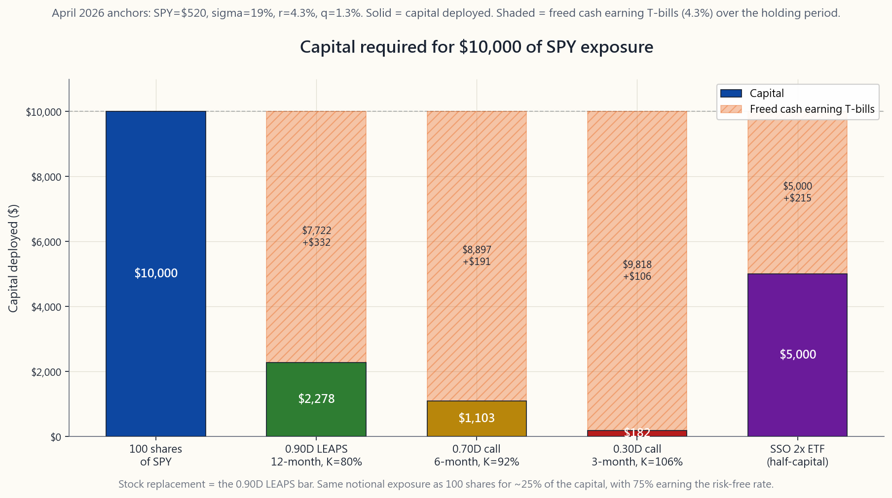
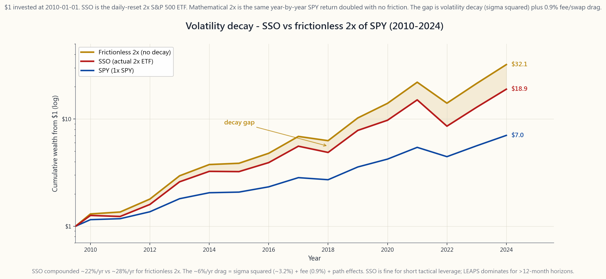

Week 37: Options as Leverage — Stock Replacement With Deep-ITM Calls
1. Why This Is Important
Most retail investors hear "options are leverage" and picture lottery tickets — out-of-the-money calls bought into earnings, +500% one week, -100% the next. That is one corner of the option universe, and it is the corner where almost everyone loses. The institutional corner is different: a single deep-in-the-money LEAPS call can deliver roughly 90% of a stock's economic exposure for 25-35% of the capital, while leaving the remaining 65-75% of the cash to earn risk-free Treasury yield. That is not gambling. It is stock replacement, and it is one of the cleanest ways the barbell construction — boring core plus concentrated alpha sleeves, financed by tax-efficient option leverage — shows up in a real account.
There are four reasons this lesson sits at the centre of the L3 curriculum.
This lesson is the operational manual for that distinction.
2. What You Need to Know
2.1 Delta Is the Leverage Dial
A call's delta is the first derivative of the option price with respect to the underlying. A 0.50Δ option moves about 50 cents for every 1 dollar in the stock. A 0.90Δ option moves about 90 cents on the dollar. For stock-replacement purposes, delta is the leverage dial:
- 0.90Δ deep-ITM 12-month call ≈ 90% of stock exposure, ≈ 25-30% of stock capital.
- 0.70Δ moderately-ITM 6-month call ≈ 70% of stock exposure, ≈ 12-18% of stock capital.
- 0.30Δ near-the-money 3-6 month call ≈ 30% of stock exposure, ≈ 3-6% of stock capital.
- 0.10Δ OTM short-dated call ≈ 10% of stock exposure, < 1% of stock capital — the lottery ticket.
For a numerical anchor: SPY at $520, a January 2027 (about 9 months out in April 2026) $416 call (K = 80% of spot) prices around $123 with σ = 19%, r = 4.3%. Delta is 0.92. Per contract you control $52,000 of SPY exposure for $12,300 of premium — about 24 cents on the dollar.
![Stacked bar chart comparing the capital required to obtain $10,000 of SPY exposure across four routes — direct shares, a 0.92Δ 12-month deep-ITM LEAPS, a 0.70Δ 6-month moderately-ITM call, and a 0.30Δ short-dated near-the-money call. Shares require the full $10,000; the 0.92Δ LEAPS requires roughly $2,400 in premium, freeing ~$7,600 of cash (shaded orange) that earns risk-free T-bill yield (~4.3% in April 2026); the 0.70Δ call requires about $1,200; the 0.30Δ lottery-ticket call only ~$300 but with sharply lower delta and probability-of-profit. The chart visualises why delta is the leverage dial and why the freed cash is half the story.](image/week37_replacement_capital.png)
2.2 The Capital You Free Up Is Real Money
The quiet half of stock replacement is the cash you do not spend. If a 0.92Δ LEAPS replicates 92% of $52,000 of SPY exposure for $12,300, the remaining $39,700 sits in your account. In April 2026, with 3-month T-bills yielding about 4.3% and money-market funds (SGOV, BIL) tracking the same level, that cash is not idle — it pays roughly $1,700 per year in coupon, all of which is taxed at ordinary income but all of which is incremental return that the buy-and-hold stock investor does not capture, because their $52,000 is fully deployed.
Over a 9-month holding period the freed-cash carry adds roughly 3.0-3.3% to the position's total economic return, which fully or partially offsets the SPY dividend you forfeit (SPY's trailing-twelve-month yield in April 2026 is about 1.3%) plus the option's extrinsic decay (about 1.5-2.5% on a 0.92Δ LEAPS over 9 months). Net of all three, the deep-ITM LEAPS is approximately neutral against owning shares on price-only return, but it consumed one-quarter of the capital. The other three-quarters can sit in T-bills or fund the rest of the four-tranche barbell.
2.3 The Risks You Are Taking On
2.4 The Tax Picture
For a US taxable investor, the tax case for LEAPS-as-leverage is the cleanest in the option universe.
- Hold > 365 days, sell at gain → long-term capital gain. Same 15-20% rate as the stock would have received.
- Sell at loss → ordinary capital loss, deductible against other capital gains, with $3,000/yr against ordinary income carry-forward.
- No mark-to-market. Unlike Section 1256 (broad-based index futures and a small set of index options), single-stock and most ETF options follow standard equity-option tax rules — gains crystallise only when you sell.
- No financing-cost statement. Margin interest is deductible only against investment income and is generally not worth the friction. The implicit financing inside the LEAPS price is not a deduction, but it is also not income to anyone — it is a feature of the contract, not a tax event.
2.5 Compared to a 2x Leveraged ETF
The most common alternative retail picks for index leverage is the daily-reset 2x ETF: SSO (2x S&P 500), QLD (2x Nasdaq-100), UPRO/TQQQ (3x). They have a single, important problem — path dependence.
A 2x daily-reset ETF earns approximately: $$ r_{\text{2x},\text{annual}} \approx 2 r - \sigma^2 $$ where $r$ is the underlying's annual return and $\sigma^2$ is its realised variance. For the S&P 500 with $\sigma \approx 18\%$, the $\sigma^2$ term is about 3.2% per year of straight drag. Empirically, over 2010-2024, SSO compounded at roughly 22% per year while a frictionless 2x of SPY would have compounded at roughly 28%. SSO did not blow up — it just lagged the math by enough to make any thesis longer than 12 months expensive.
![Cumulative-growth chart of $1 invested at the start of 2010 in three vehicles through 2024: SPY total-return (blue, ending near $7, ~13.9% CAGR), a frictionless mathematical 2x of SPY compounded annually (gold, ending near $32, ~26-28% CAGR), and the actual 2x daily-reset ETF SSO (red, ending near $21, ~22% CAGR). The gap between the gold and red lines is the volatility decay — roughly 6 percentage points per year of compounded drag from the daily reset's σ² penalty plus expense ratio and embedded financing. Over 15 years that gap compounds into roughly one-third less terminal wealth than the frictionless 2x.](image/week37_lev_etf_decay.png)
A 0.92Δ LEAPS does not have this problem. It compounds at approximately 0.92 times the underlying's price return, plus or minus the small extrinsic decay, with no daily reset and therefore no $\sigma^2$ drag. This is the single biggest reason institutional desks running a barbell use long-dated single-name options instead of leveraged ETFs.
The 2x ETF does have one advantage: it pays its (tiny) dividend, it can sit in any account, and you do not have to roll. For a passive investor who wants modest leverage and will not pay attention, SSO is fine. For anyone running the L2/L3 sleeve actively, LEAPS dominates on capital efficiency, tax, and path-independence.
2.6 How to Size a Stock-Replacement Position
Three rules from the desk.
Try the Replacement Lab interactive — pick a target equity exposure and watch capital, breakeven, freed-cash yield, and total return shift across shares, three LEAPS deltas, and SSO.
3. Common Misconceptions
4. Q&A Section
Q1. How deep-ITM should the strike be? 80-85% of spot is the sweet spot. That puts delta at roughly 0.85-0.95 on a 12-month expiration with normal vol, which is the band where you are paying minimal extrinsic for near-stock exposure.
Q2. What if the stock falls 10% the day after I buy the LEAPS? Your 0.92Δ LEAPS loses about 92% of that 10%, ie roughly 9.2% of the underlying value. Your dollar loss as a percentage of premium is larger than 10% — that is the leverage. The maximum loss remains the premium paid.
Q3. Should I do this on individual stocks or only on indexes? Single-name LEAPS works on the top 50 US large-caps where liquidity is good. Indexes (SPY, QQQ, IWM) are the canonical use case because liquidity is best and idiosyncratic gap risk is lower.
Q4. What's the right expiration? 12-18 months at purchase, rolled forward when 90 days remain. Anything shorter than 9 months has too much theta; anything longer than 24 months has too little liquidity at typical strikes.
Q5. How does this interact with the four-tranche framework? Stock replacement converts the L1 beta sleeve from 100% capital to roughly 25% capital, freeing 75% to fund the L2 and L3 strategy sleeves without reducing equity exposure. This is the operational mechanism behind the barbell.
Q6. What's the all-in cost of running this strategy on SPY? Approximately: SPY dividend skipped (1.3%/yr) + LEAPS extrinsic decay (2-3%/yr) - freed-cash T-bill yield earned (~3.0%/yr on the 75% freed) = net cost ~0-0.5%/yr. Plus commissions and one bid-ask round trip per 12 months (~0.3%).
Q7. Can I do this in a Roth IRA? Yes — long calls including LEAPS are permitted in IRAs at most brokers (Schwab, Fidelity, IBKR). You cannot trade naked calls or use margin in an IRA, but stock-replacement long calls are allowed, and the freed cash earns Treasury yield tax-free inside the Roth.
Q8. Is implied volatility worth tracking? Yes. Buy LEAPS when the underlying's IV rank is below 50 (preferably below 30). High-IV LEAPS embed an expensive vol premium that decays as IV mean-reverts, even if the stock is unchanged.
Q9. Should I sell a short call against the LEAPS to cheapen it? That is a poor-man's covered call (PMCC) — covered in week 30. It does cheapen the position but it caps upside and introduces assignment risk on the short leg. For pure stock replacement, keep the LEAPS naked.
Q10. How does this compare to running margin at IBKR's portfolio margin? Portfolio margin can get to 4-6x leverage but charges 6-7% on debit balances in 2026 and exposes the account to forced liquidation in a gap-down. LEAPS does not have a margin call. For investors who can tolerate margin call risk and trade large enough to qualify for portfolio margin, the cost-per-leverage can be similar; for everyone else, LEAPS wins on operational risk.
Q11. What about TQQQ / UPRO (3x)? Same story as SSO but worse. Annual decay is approximately $3 \sigma^2 - \text{financing}$, which on the Nasdaq-100 means 8-12%/year drag. Over 5+ years TQQQ underperforms a 3x LEAPS basket on QQQ by a wide margin. Use 3x ETFs only as short-term tactical instruments.
Q12. When does this strategy fail? Three regimes: (1) sustained multi-year drawdown — your LEAPS can go to zero before you can roll; (2) high-vol whipsaw markets where IV crush after a vol-spike purchase removes 20-30% of premium; (3) anything illiquid where the bid-ask spread eats the freed-cash carry. Stick to top-50 underliers and IV rank < 50.
第37週：期權作為槓桿——以深度價內認購期權替代股票
1. 為什麼這一課至關重要
大多數散戶投資者一聽到「期權是槓桿」，腦海中浮現的便是彩票——在業績公布前買入價外認購期權，一週暴漲500%，下一週歸零。這只是期權世界的一個角落，而且幾乎所有人都在這個角落虧損。機構投資者的做法截然不同：一張深度價內長期期權可以以25-35%的資本，複製約90%的股票經濟敞口，同時將餘下65-75%的現金投入無風險國債賺取收益。這不是賭博，而是股票替代策略，也是槓鈴式構建——沉悶的核心加上集中的阿爾法策略袖，以稅務高效的期權槓桿融資——在真實賬戶中最典型的呈現方式之一。
這堂課位於L3課程核心，有四個原因。
本課是這種區分的操作手冊。
2. 你需要掌握的知識
2.1 貝塔Δ是槓桿的調節器
認購期權的貝塔Δ是期權價格相對於正股的一階導數。0.50Δ的期權，正股每上漲1元，期權約上漲50仙；0.90Δ的期權約上漲90仙。就股票替代策略而言，貝塔Δ是槓桿的調節器：
- 0.90Δ深度價內12個月認購期權 ≈ 90%的股票敞口，約佔股票資本的25-30%。
- 0.70Δ中度價內6個月認購期權 ≈ 70%的股票敞口，約佔股票資本的12-18%。
- 0.30Δ接近等價3-6個月認購期權 ≈ 30%的股票敞口，約佔股票資本的3-6%。
- 0.10Δ價外短期認購期權 ≈ 10%的股票敞口，不足股票資本的1%——即彩票式投機。
以數字作錨點：SPY報$520，2027年1月（2026年4月起約9個月後）行使價$416的認購期權（行使價為現價的80%），在σ=19%、r=4.3%時，定價約$123，貝塔Δ為0.92。每張合約控制$52,000的SPY敞口，期權金僅需$12,300——約為正股的24仙。

2.2 你釋放的資本是真實的回報
股票替代策略中較安靜的一半，是你不需要動用的現金。若一張0.92Δ長期期權以$12,300複製$52,000 SPY敞口的92%，剩餘$39,700便留在賬戶中。2026年4月，3個月短期國庫券收益率約4.3%，貨幣市場基金（SGOV、BIL）追蹤同一水平，這些現金並非閒置——每年帶來約$1,700的票息，雖按一般收入徵稅，但這是額外回報，買入持有股票的投資者無法獲得，因為他們的$52,000已全部部署。
持有9個月期間，釋放現金的套息回報約為總經濟回報增加3.0-3.3個百分點，足以全部或部分抵銷所放棄的SPY股息（SPY過去12個月股息率約1.3%），以及期權的外在價值損耗（0.92Δ長期期權9個月內約1.5-2.5%）。扣除三者後，深度價內長期期權在純價格回報上與直接持股大致相當，但僅動用四分之一的資本。其餘四分之三可投入短期國庫券，或用於資助四档槓鈴策略的其他部分。
2.3 你所承擔的風險
2.4 稅務全景
對美國應稅投資者而言，長期期權作為槓桿工具在稅務方面的優勢，在整個期權世界中是最清晰的。
- 持有超過365天，獲利平倉 → 長期資本增值。 稅率與股票相同，均為15-20%。
- 虧損平倉 → 一般資本虧損，可抵銷其他資本增值，每年最多$3,000可抵銷一般收入，餘額可結轉。
- 無按市值計算規則。 與第1256條款（廣基指數期貨及部分指數期權）不同，個股及大多數交易所買賣基金期權遵循標準股票期權稅務規則——收益僅在平倉時確認。
- 無融資成本稅務申報。 保證金利息只能抵扣投資收入，一般而言摩擦成本不划算。長期期權定價中隱含的融資成本不可扣稅，但對任何人而言亦非應稅收入——這是合約的特性，而非稅務事件。
2.5 與2倍槓桿交易所買賣基金的比較
散戶最常選擇的指數槓桿替代品是每日重置的2倍交易所買賣基金：SSO（2倍標普500）、QLD（2倍納斯達克100），以及UPRO/TQQQ（3倍）。它們有一個重大問題——路徑依賴性。
每日重置2倍交易所買賣基金的年化回報率約為： $$ r_{\text{2x},\text{年化}} \approx 2 r - \sigma^2 $$ 其中$r$為正股年化回報，$\sigma^2$為已實現方差。標普500的$\sigma \approx 18\%$，$\sigma^2$項每年造成約3.2%的機械性拖累。實際上，2010至2024年間，SSO年複合回報率約22%，而無摩擦的數學2倍SPY應約達28%。SSO並未崩潰——只是跑輸數學結果的幅度，使任何超過12個月的持倉成本高昂。

0.92Δ長期期權沒有這個問題。它以約0.92倍正股價格回報複利增長，加減小幅外在價值損耗，無需每日重置，因此亦無$\sigma^2$拖累。這是機構交易台在槓鈴策略中使用長期單一標的期權而非槓桿交易所買賣基金的最重要原因。
2倍交易所買賣基金確有一項優勢：它支付（微薄的）股息，可在任何賬戶持有，且無需滾動。對於想要適度槓桿且不需要主動管理的被動管理投資者而言，SSO尚可接受。但對於主動運作L2/L3策略袖的任何人，長期期權在資本效率、稅務及路徑獨立性上均勝出。
2.6 如何為股票替代倉位定規模
交易台的三條準則。
請嘗試替代策略實驗室互動工具——選擇目標股票敞口，觀察資本、盈虧平衡點、釋放現金收益率及總回報如何隨直接持股、三種長期期權貝塔Δ及SSO的變化而移動。
3. 常見誤解
4. 問答環節
問1. 行使價應該設多深？ 現價的80-85%是最佳區間。在正常波動率下，12個月到期的情況下，貝塔Δ約為0.85-0.95，這個區間的外在價值最少，卻能提供接近股票的敞口。
問2. 如果我買入長期期權後翌日股票下跌10%，怎麼辦？ 你的0.92Δ長期期權將損失約92%的跌幅，即正股價值的約9.2%。以期權金計算的百分比損失大於10%——這正是槓桿效應。最大虧損仍限於所支付的期權金。
問3. 應該在個股還是指數上操作？ 個股長期期權適用於前50名美國大型股，流動性較好。指數（SPY、QQQ、IWM）是典型使用場景，因流動性最佳，且個股跳空缺口風險較低。
問4. 到期日應該選多長？ 買入時選12至18個月，剩餘90天時滾動。不足9個月的時間值損耗過重；超過24個月在典型行使價的流動性通常不足。
問5. 這與四档策略框架如何配合？ 股票替代策略將L1貝塔策略袖的資本從100%壓縮至約25%，釋放75%用於資助L2和L3策略袖，同時不減少股票敞口。這正是槓鈴策略背後的操作機制。
問6. 在SPY上運行此策略的全部成本是多少？ 大約：放棄SPY股息（1.3%/年）+ 長期期權外在價值損耗（2-3%/年）- 賺取的釋放現金短期國庫券收益（釋放75%現金約3.0%/年）= 淨成本約0-0.5%/年。加上佣金及每12個月一次的買賣差價（約0.3%）。
問7. 可以在羅斯個人退休賬戶中操作嗎？ 可以——大多數經紀（Schwab、Fidelity、IBKR）允許在個人退休賬戶中買入包括長期期權在內的長倉認購期權。個人退休賬戶不能進行裸賣空期權或使用保證金，但股票替代長倉認購期權是允許的，釋放的現金在羅斯個人退休賬戶內免稅賺取國庫券收益。
問8. 引伸波幅值得追蹤嗎？ 值得。在標的的引伸波幅排名低於50時（最好低於30）買入長期期權。高引伸波幅的長期期權包含昂貴的波動率溢價，即使股票不動，隨著引伸波幅均值回歸，溢價也會損耗。
問9. 應該在長期期權上加賣認購期權以降低成本嗎？ 那是窮人備兌認購期權策略（PMCC）——第30週已涵蓋。這確實可降低持倉成本，但也封頂了上行空間，並引入短腿被行使的風險。純股票替代策略應保持長期期權的單純長倉。
問10. 與在IBKR使用組合保證金相比如何？ 組合保證金可達4-6倍槓桿，但2026年借款利率為6-7%，且在跳空下跌時會面臨強制平倉風險。長期期權沒有追繳保證金風險。對於能承受追繳保證金風險且交易規模足夠達到組合保證金資格的投資者，每單位槓桿的成本可能相近；對其他所有人而言，長期期權在操作風險上勝出。
問11. TQQQ/UPRO（3倍）又如何？ 與SSO相同，但更嚴峻。年化損耗約為$3\sigma^2 - \text{融資成本}$，在納斯達克100上意味著每年8-12%的拖累。5年以上，TQQQ的表現遠遜於QQQ上的3倍長期期權組合。3倍交易所買賣基金僅應作短期戰術性工具使用。
問12. 此策略在什麼情況下失效？ 三種市況：（1）持續多年的回撤——長期期權可能在你能夠滾動之前歸零；（2）高波動率反覆震盪市場——在波動率飆升後買入，引伸波幅急跌可能蒸發20-30%的期權金；（3）任何流動性差的標的，買賣差價侵蝕全部釋放現金套息回報。請堅守前50名標的，並確保引伸波幅排名低於50。
第37週：選擇權作為槓桿——以深度價內買權取代持股
1. 為何這個主題至關重要
多數散戶投資人一聽到「選擇權就是槓桿」，腦中浮現的是彩券——在財報前買進價外買權，一週漲500%、下一週跌100%歸零。這只是選擇權世界的一個角落，而且幾乎所有人在這個角落都會虧損。機構的做法截然不同：一口深度價內的長期期權買權，能以25%至35%的資金取得約90%的股票經濟曝險，同時讓剩餘65%至75%的現金賺取無風險的國庫券殖利率。這不是賭博，這是持股取代策略，也是槓鈴式投資架構——以無聊的核心部位加上集中型阿爾法配置，透過稅務效率佳的選擇權槓桿來資助——在真實帳戶中最清晰的體現方式之一。
本課位於L3課程核心，有以下四個理由。
本課是這項區別的操作手冊。
2. 你必須掌握的知識
2.1 貝塔值是槓桿調節旋鈕
買權的貝塔值是選擇權價格對標的資產的一階導數。0.50Δ的選擇權，標的股票每漲1元，選擇權約漲50分。0.90Δ的選擇權，則漲約90分。就持股取代而言，貝塔值就是槓桿調節旋鈕：
- 0.90Δ深度價內12個月買權 ≈ 90%的股票曝險，≈ 25-30%的股票資金。
- 0.70Δ適度價內6個月買權 ≈ 70%的股票曝險，≈ 12-18%的股票資金。
- 0.30Δ接近價平3至6個月買權 ≈ 30%的股票曝險，≈ 3-6%的股票資金。
- 0.10Δ價外短期買權 ≈ 10%的股票曝險，< 1%的股票資金——即彩券型操作。
以數字為基準：SPY報520美元，2027年1月（2026年4月時約9個月後到期）履約價416美元（K = 現貨的80%）的買權，在σ = 19%、r = 4.3%的條件下，定價約123美元，貝塔值為0.92。每口合約以12,300美元的權利金控制52,000美元的SPY曝險——約每美元花24分錢。
2.2 你所釋放的資金是真實的錢
持股取代策略中，不為人知的另一半，是你未動用的現金。若一口0.92Δ長期期權以12,300美元複製了52,000美元SPY曝險的92%，剩下的39,700美元就停留在你的帳戶中。2026年4月，3個月國庫券殖利率約4.3%，貨幣市場基金（SGOV、BIL）追蹤相同水準，這筆現金並非閒置——每年約可賺進1,700美元，全部按一般所得稅率課稅，但全部都是增量報酬，而買進持有的股票投資人無法獲得，因為他們的52,000美元已全數投入。
在9個月的持有期間，釋放現金的利息收入為整體部位的總經濟報酬貢獻約3.0%至3.3%，足以全部或部分抵銷以下三項：你放棄的SPY股利（SPY截至2026年4月的近12個月殖利率約1.3%），加上選擇權的外含價值損耗（0.92Δ長期期權在9個月內約損耗1.5%至2.5%）。三者相抵後，深度價內長期期權在僅計算價格報酬的條件下，與直接持股大致持平，但它只消耗了四分之一的資金。其他四分之三可存放於國庫券，或用來資助四配置槓鈴架構的其他部分。
2.3 你所承擔的風險
2.4 稅務全貌
對美國應稅帳戶的投資人而言，以長期期權作為槓桿的稅務案例，是整個選擇權世界中最清晰的。
- 持有超過365天、有獲利賣出 → 長期資本利得。 適用與持有股票相同的15%至20%稅率。
- 虧損賣出 → 一般資本損失，可抵銷其他資本利得，每年最多3,000美元可抵銷一般所得，剩餘可結轉。
- 無逐市計值規定。 不同於第1256節（廣泛基礎指數期貨及少數指數選擇權），個股及多數指數股票型基金選擇權遵循標準股票型選擇權稅務規定——獲利僅在賣出時實現，不提前課稅。
- 無融資成本申報。 保證金利息僅能用於抵銷投資所得，且通常不划算。長期期權價格中隱含的融資成本不可扣抵，但對任何人而言也不構成課稅所得——這只是合約的特性，不是稅務事件。
2.5 與2倍槓桿型指數股票型基金的比較
散戶最常見的指數槓桿替代選擇，是每日重置的2倍指數股票型基金：SSO（2倍標普500）、QLD（2倍那斯達克100）、UPRO/TQQQ（3倍）。它們有一個核心問題——路徑相依性。
2倍每日重置指數股票型基金的年化報酬約為： $$ r_{\text{2x},\text{年化}} \approx 2 r - \sigma^2 $$ 其中 $r$ 為標的年化報酬，$\sigma^2$ 為實現波動率的平方。對標準差約18%的標普500而言，$\sigma^2$ 項每年約造成3.2%的直接拖累。實際數據顯示，2010年至2024年間，SSO年複合報酬約22%，而無摩擦的2倍SPY年複合報酬約達28%。SSO並未崩潰——但它與理論數字的差距，足以讓任何超過12個月的持有策略付出高昂代價。
0.92Δ長期期權不存在這個問題。它的複合報酬約為標的價格報酬的0.92倍，加減微小的外含價值損耗，沒有每日重置，因此也沒有$\sigma^2$拖累。這是機構在執行槓鈴策略時，選擇長期單一標的選擇權而非槓桿型指數股票型基金的最主要原因。
2倍指數股票型基金確實有一項優勢：可支付（微薄的）股利、可在任何帳戶持有、不需要轉倉。對希望適度槓桿且不積極管理的被動式管理投資人而言，SSO是可以接受的選擇。但對任何主動式管理L2/L3配置的投資人，長期期權在資本效率、稅務及路徑獨立性上均勝出。
2.6 如何調整持股取代部位的規模
來自交易台的三條規則。
試試取代實驗室互動工具——設定目標股票曝險金額，觀察在直接持股、三種長期期權貝塔值選項以及SSO之間切換時，資金需求、損益平衡點、釋放現金殖利率與總報酬如何變化。
3. 常見迷思
4. 問答單元
Q1. 履約價應該設多深的價內？ 現貨的80%至85%是最佳甜蜜點。在正常波動率下，12個月到期的選擇權貝塔值約為0.85至0.95，這個區間所付的外含價值最少，卻能取得接近股票的曝險。
Q2. 如果買進長期期權後第二天股票跌10%，怎麼辦？ 你的0.92Δ長期期權損失約92%的那10%，即標的價值的約9.2%。以權利金為分母計算的百分比損失，會大於10%——這就是槓桿的效果。但最大損失仍以已付的權利金為限。
Q3. 這個策略應該用在個股還是只用在指數？ 個股長期期權適用於流動性佳的前50大美國大型股。指數（SPY、QQQ、IWM）是最典型的應用案例，因為流動性最好，且個股跳空風險較低。
Q4. 什麼到期日最合適？ 買進時選12至18個月，剩餘90天時向前轉倉。不足9個月的選擇權Theta太高；超過24個月的選擇權在一般履約價上流動性太低。
Q5. 這個策略與四配置架構如何搭配？ 持股取代策略將L1貝塔配置從100%資金壓縮至約25%資金，釋放75%用於資助L2和L3策略配置，同時不降低你的貝塔曝險。這就是槓鈴架構的運作機制。槓鈴策略之所以可行，前提是你能以低於全額資金的成本持有完整貝塔曝險。
Q6. 在SPY上執行這個策略的全部成本是多少？ 大約是：跳過的SPY股利（1.3%/年）+ 長期期權外含價值損耗（2-3%/年）- 釋放現金賺取的國庫券殖利率（釋放的75%資金賺約3.0%/年）= 淨成本約0至0.5%/年。加上手續費與每12個月一次的買賣價差往返（約0.3%）。
Q7. 可以在羅斯個人退休帳戶中執行嗎？ 可以——在多數券商（Schwab、Fidelity、IBKR）的個人退休帳戶中，包括長期期權在內的多方買權均被允許。個人退休帳戶不能交易裸賣權或使用保證金，但持股取代型的多方買權是被允許的，且在羅斯個人退休帳戶內，釋放的現金可免稅賺取國庫券殖利率。
Q8. 隱含波動率值得追蹤嗎？ 值得。在標的的隱含波動率排名低於50（最好低於30）時買進長期期權。高隱含波動率的長期期權含有昂貴的波動率溢酬，即使股票未變動，隱含波動率均值回歸也會侵蝕部位價值。
Q9. 應該在長期期權上賣出空頭買權來降低成本嗎？ 那就是窮人版掩護性買權（PMCC）——在第30週有詳細說明。確實可以降低持有成本，但會限制上行空間並引入空頭腳被指派的風險。若目的是純粹的持股取代，保持長期期權為純多方部位即可。
Q10. 與IBKR的組合保證金相比，哪個更好？ 組合保證金可以達到4至6倍槓桿，但2026年帳戶借貸利率為6%至7%，且在跳空下跌時面臨強制平倉風險。長期期權沒有追繳保證金的問題。對能承受追繳保證金風險且交易規模達到組合保證金資格門檻的投資人，每單位槓桿的成本可能相近；但對其他所有人而言，長期期權在操作風險上勝出。
Q11. TQQQ / UPRO（3倍）怎麼樣？ 與SSO同理但更嚴重。年化損耗約為$3 \sigma^2 - \text{融資成本}$，對那斯達克100而言意味著每年8%至12%的拖累。5年以上持有，TQQQ的表現大幅落後以QQQ為基礎的3倍長期期權組合。3倍指數股票型基金僅適合作為短期戰術工具。
Q12. 這個策略在什麼情況下會失敗？ 三種市場環境：（1）持續多年的回撤——你的長期期權可能在你有機會轉倉前歸零；（2）高波動性震盪市場——在波動率飆升後買進，若隱含波動率崩塌，會使權利金損失20%至30%；（3）任何流動性不足的標的——買賣價差會吃掉釋放現金的利息收益。請堅守前50大標的，且隱含波動率排名須低於50。
第37周：期权作为杠杆——用深度实值看涨期权替代股票
1. 为什么这一课至关重要
大多数散户投资者听到"期权就是杠杆"，脑海中浮现的是彩票——财报前买入虚值看涨期权，一周涨500%，下一周跌100%。那是期权世界的一个角落，而且几乎所有人在那个角落都会亏损。机构的玩法截然不同：一张深度实值长期期权，只需25%至35%的资金，就能提供约90%的股票经济敞口，剩余65%至75%的现金则可以赚取无风险的国债收益率。这不是赌博，而是股票替代策略——也是哑铃式构建法最清晰的现实呈现：用枯燥的核心底仓加上集中的阿尔法子组合，并通过税务高效的期权杠杆来融资。
本课位于L3课程核心，原因有四：
本课是这一区分的操作手册。
2. 你需要掌握的内容
2.1 贝塔是杠杆的刻度盘
看涨期权的贝塔是期权价格相对于标的资产的一阶导数。贝塔为0.50的期权，标的每涨1美元，期权约涨50美分。贝塔为0.90的期权，约涨90美分。就股票替代策略而言，贝塔是杠杆的刻度盘：
- 贝塔0.90的深度实值12个月看涨期权 ≈ 90%的股票敞口，≈ 25-30%的股票资金。
- 贝塔0.70的适度实值6个月看涨期权 ≈ 70%的股票敞口，≈ 12-18%的股票资金。
- 贝塔0.30的近平值3至6个月看涨期权 ≈ 30%的股票敞口，≈ 3-6%的股票资金。
- 贝塔0.10的短期虚值看涨期权 ≈ 10%的股票敞口，<1%的股票资金——即彩票品种。
以具体数字作为参照：SPY报价520美元，2027年1月到期（2026年4月起约9个月后）行权价416美元的看涨期权（行权价为现价的80%），在σ=19%、r=4.3%时定价约123美元。贝塔为0.92。每份合约控制约52,000美元的SPY敞口，期权费约12,300美元——相当于每美元敞口支付约24美分。
2.2 释放的资金是真实的收益
股票替代策略中被忽视的那一半，是你未花出去的现金。如果0.92Δ长期期权以12,300美元复制了52,000美元SPY敞口中的92%，剩余39,700美元就停留在你的账户中。2026年4月，3个月国债收益率约为4.3%，货币市场基金（SGOV、BIL）跟踪同一水平，这些现金并非闲置——每年约产生1,700美元票息收益，全部按普通收入税率征税，但全部都是增量收益，而买入持有的股票投资者无法获取，因为他们的52,000美元已经全额投入。
按9个月持有期计算，释放现金的套息收益约为3.0%至3.3%，足以全部或部分抵消你损失的SPY股息（2026年4月SPY过去12个月的收益率约为1.3%），以及期权的外在价值损耗（0.92Δ长期期权在9个月内约为1.5%至2.5%）。三项合计后，深度实值长期期权相对于持股，在价格收益上大致持平，但仅消耗四分之一的资金。另外四分之三可以存放于国债基金，或用于资助四档哑铃组合的其余部分。
2.3 你所承担的风险
2.4 税务全貌
对美国应税账户投资者而言，长期期权作为杠杆工具的税务优势，是整个期权领域中最清晰的。
- 持有超过365天卖出获利→长期资本利得。 与股票相同，税率为15%至20%。
- 亏损卖出→普通资本损失，可抵扣其他资本利得，每年最多3,000美元可抵扣普通收入，超出部分可结转。
- 无须按市价计算损益。 与第1256条款不同（宽基指数期货及少数指数期权须按市价计量），单只股票及大多数交易所交易基金的期权遵循标准股权期权税务规则——收益仅在卖出时确认。
- 无融资成本报表。 保证金利息仅可抵扣投资收益，通常得不偿失。长期期权价格中隐含的融资成本不可抵扣，但也不作为任何人的收入——它是合约的特性，而非应税事件。
2.5 与2倍杠杆交易所交易基金的比较
散户最常选用的指数杠杆替代品是每日重置的2倍交易所交易基金：SSO（2倍标普500）、QLD（2倍纳斯达克100）、UPRO/TQQQ（3倍）。它们有一个核心问题——路径依赖性。
2倍每日重置交易所交易基金的年化收益率约为： $$ r_{\text{2x},\text{年化}} \approx 2 r - \sigma^2 $$ 其中$r$为标的资产年化收益率，$\sigma^2$为已实现方差。对于标普500（σ≈18%），$\sigma^2$项每年约带来3.2%的纯粹拖累。实证数据显示，2010至2024年间，SSO年化复合收益率约为22%，而无摩擦的数学2倍SPY年化复合约为28%。SSO没有崩溃——只是与数学预期差距大到足以让任何超过12个月的策略代价高昂。
0.92Δ长期期权没有这个问题。它的复合增长约为标的资产价格收益率的0.92倍，加减小额外在价值损耗，没有每日重置，因此也没有$\sigma^2$拖累。这是运行哑铃策略的机构交易台使用长期单一标的期权而非杠杆交易所交易基金的最核心原因。
2倍交易所交易基金的确有一个优势：会支付（微薄的）股息，可在任何账户中持有，无需滚动操作。对于想要适度杠杆且不会主动管理的被动投资者而言，SSO无可厚非。但对于积极运行L2/L3子组合的投资者，长期期权在资本效率、税务和路径独立性上均占优。
2.6 如何确定股票替代头寸的规模
来自交易台的三条原则：
请尝试替代实验室互动工具——选择目标股票敞口，观察不同股票、三种长期期权贝塔以及SSO之间，资金需求、盈亏平衡点、释放现金收益率和总收益的变化。
3. 常见误区
4. 问答环节
问题1：行权价应该深入实值多少？ 现价的80%至85%是最佳区间。在正常波动率下，该行权价对应12个月到期时贝塔约为0.85至0.95，你为接近股票的敞口支付最少的外在价值。
问题2：买入长期期权后次日股票下跌10%怎么办？ 你的0.92Δ长期期权大约损失该10%的92%，即标的资产价值约9.2%。你的亏损占期权费的百分比会大于10%——这就是杠杆。但最大亏损仍以已付期权费为限。
问题3：应该在单只股票还是指数上操作？ 单只股票长期期权适用于流动性良好的美国前50大市值股票。指数（SPY、QQQ、IWM）是经典应用场景，因为流动性最佳，且个股跳空风险较低。
问题4：应该选择哪个到期日？ 买入时选12至18个月，当剩余90天时向前滚动。短于9个月的期权Theta过大；长于24个月的期权在典型行权价上流动性不足。
问题5：这与四档框架如何配合？ 股票替代策略将L1贝塔子组合的资金需求从100%降至约25%，释放75%用于资助L2和L3策略子组合，同时不降低股票敞口。这是哑铃策略背后的运作机制。
问题6：在SPY上运行此策略的综合成本是多少？ 大约为：放弃SPY股息（1.3%/年）+ 长期期权外在价值损耗（2-3%/年）- 释放现金赚取的国债收益（约3.0%/年，按释放的75%计算）= 净成本约0至0.5%/年。加上佣金及每12个月一次的买卖价差往返成本（约0.3%）。
问题7：可以在Roth IRA（罗斯个人退休账户）中操作吗？ 可以——大多数券商（Schwab、Fidelity、IBKR）允许在个人退休账户中持有包括长期期权在内的多头看涨期权。在个人退休账户中不能做裸期权或使用保证金，但股票替代多头看涨期权是被允许的，释放的现金在罗斯个人退休账户内免税赚取国债收益率。
问题8：隐含波动率值得跟踪吗？ 值得。当标的资产的隐含波动率百分位低于50（最好低于30）时买入长期期权。高隐含波动率的长期期权内嵌了昂贵的波动率溢价，即使股价不变，随着隐含波动率均值回归，该溢价也会消耗掉。
问题9：应该卖出一个空头看涨期权来对冲长期期权的成本吗？ 那就是穷人版备兑看涨期权（PMCC）——第30周已有讲解。它确实可以降低持仓成本，但会封顶上涨空间，并为空头腿引入被迫行权风险。就纯粹的股票替代策略而言，保持长期期权的裸持不变。
问题10：与IBKR的投资组合保证金相比如何？ 投资组合保证金可以达到4至6倍杠杆，但2026年时借贷利率为6%至7%，且在跳空下跌时账户面临强制平仓风险。长期期权没有追加保证金的要求。对于能承受保证金追缴风险且规模足够大以申请投资组合保证金的投资者，单位杠杆成本可能相近；对其他所有人而言，长期期权在操作风险上更胜一筹。
问题11：TQQQ/UPRO（3倍杠杆）怎么样？ 与SSO同理，但更糟。年化损耗约为$3\sigma^2 - \text{融资成本}$，对纳斯达克100而言意味着每年8%至12%的拖累。5年以上持有期内，TQQQ对基于QQQ的3倍长期期权组合的表现差距悬殊。3倍杠杆交易所交易基金仅适合短期战术操作。
问题12：该策略在哪些情况下会失效？ 三种市场环境：（1）持续多年的大幅回撤——你的长期期权可能在你来得及滚动之前归零；（2）高波动率的震荡市——在波动率飙升后买入，隐含波动率崩塌可能使期权费损失20%至30%；（3）任何流动性差的情况，买卖价差会吃掉释放现金的套息收益。坚守前50名标的，隐含波动率百分位低于50。